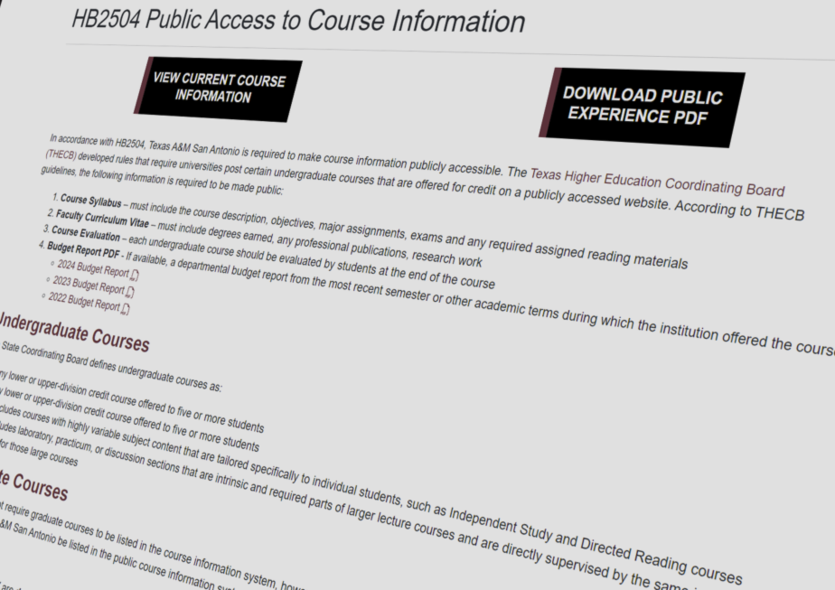
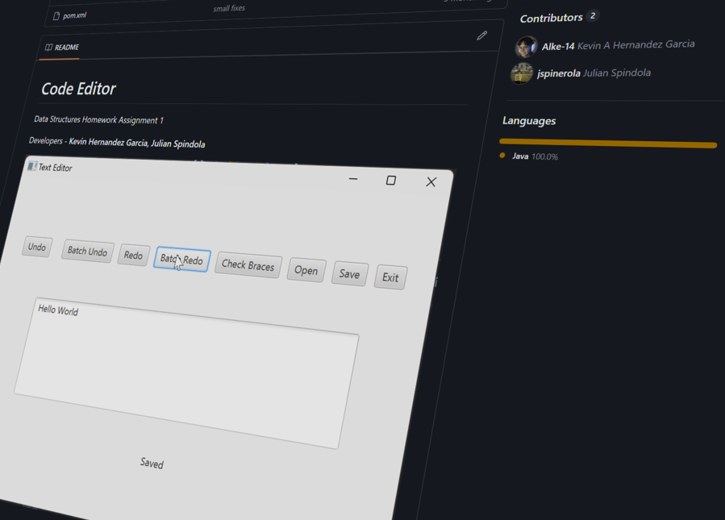

Projects

TAMUSA Esports
A site for the Texas A&M San Antonio Esports center; intended to display team rosters and their events/livestreams.

TAMUSA HB2504
Texas A&M San Antonio database for Faculty to upload syllabi for their respective courses, and keep track of syllabi uploaded.

Future Intern
An internship with Texas A&M San Antonio's Mays Center; intended to be an internship database fetched from multiple clients.

Code Editor
A simple Data Structures course project I collaborated with a colleague; used JavaFX and implemented a stack interface.

Program Finder
Component created for the Texas A&M San Antonio University website with functionalities like search bar and filter buttons.